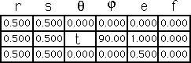
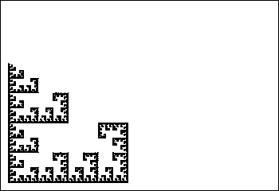

IFS Animations
Here we investigate the effect of different values for theta and phi.
In this example,
θ = t
ranges between 90 and 0 in steps of 10°.
Can you give a complete description of the
theta = 0
picture?

